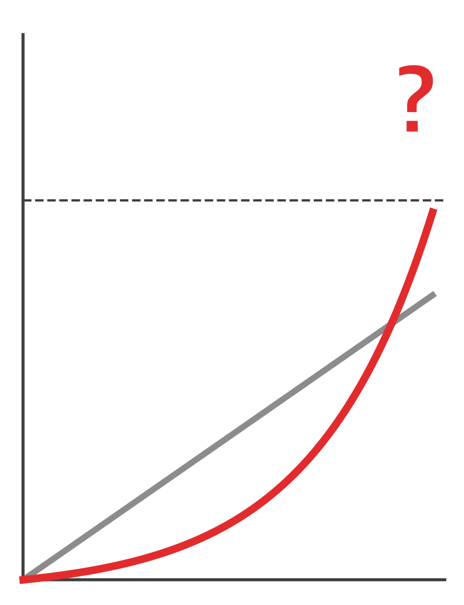
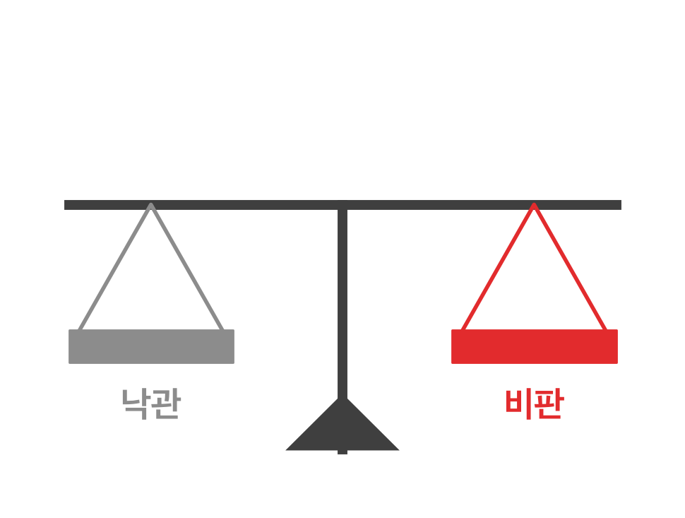
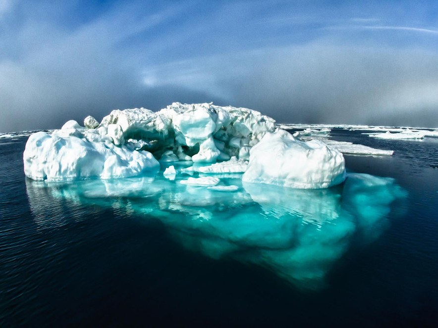

13
데이톨로지 — 데이터로 읽는 인간과 사회
주교재: 김성태, 『데이톨로지』 2부 · 연재 ⑪ · 강사 : ○○○

CONTENTS

목표 1
특이점 낙관론과 비판론의 논거 정리
목표 2
저자의 세 가지 반론과 쿨/핫 데이터 구분 설명
오늘의 질문
2005년 커즈와일의 예언
“2029년, AI가 인간 수준에 도달”
2026년의 우리는 어떻게 채점할까?
[비유] 높이 쌓인 신문 더미
사진: Ben Sutherland / CC BY 2.0
빅카인즈 ‘AI’ 키워드 뉴스: 2000년 163건 → 2020년 90,835건
관심의 그림자: 우려와 실패
전문가 979명, ‘AI and the Future of Humans’
MIT 테크놀로지리뷰 보도
[비유] 굴러가는 눈덩이
사진: kamshots / CC BY 2.0
선형 성장 vs 기하급수 성장
특이점 논쟁의 지형
| 낙관 | 경고·비판 |
|---|---|
| 레이 커즈와일 『특이점이 온다』(2005): 2029년 전후 | 스티븐 호킹: 초지능은 인류의 재앙일 수 있음 |
| 에릭 슈미트: AI가 기후·빈곤·전쟁·암 해결 | 일론 머스크(2014): “AI는 원자폭탄보다 위험” |
| 제리 캐플런: AI는 인간처럼 사고 불가 → 특이점 없음 | |
| 게리 마커스·어니스트 데이비스 『2029 기계가 멈추는 날』 |
마커스·데이비스의 사례: 알렉사(1억 대)·구글 자율주행·IBM 왓슨의 한계
[비유] 빙산

사진: NOAA's National Ocean Service / CC BY 2.0
뇌공학 · 인간의 감성 · 사회 환경
[비유] 온도계
사진: matsuyuki / CC BY-SA 2.0
AI 발전 3단계: 딥러닝 → 딥언더스탠딩 → 딥필링
저자의 결론
하라리 『호모 데우스』의 ‘데이터교’ · ‘만물인터넷’과 함께 읽기
활동 (60분): 모의재판
역할
증거 규칙
쟁점
오늘의 핵심 4줄
특이점 = AI가 인간 지능을 넘어서는 순간 (커즈와일: 2029년 전후)
수확 가속의 법칙 = 기술의 기하급수적 발전
저자의 반론 = 뇌공학(무의식) · 감성 · 사회 환경
쿨 → 핫 데이터 = 딥러닝 → 딥언더스탠딩 → 딥필링
확인 문제
커즈와일이 특이점의 근거로 제시한 법칙과 그 뜻
저자가 2029년 특이점에 반대한 세 가지 이유
“감정이 담긴 영화 후기 문장”은 쿨 데이터와 핫 데이터 중 어느 쪽
마무리
딥러닝에서 딥필링으로 — 감정이라는 마지막 영토
사진 (Openverse 검색, CC 라이선스)